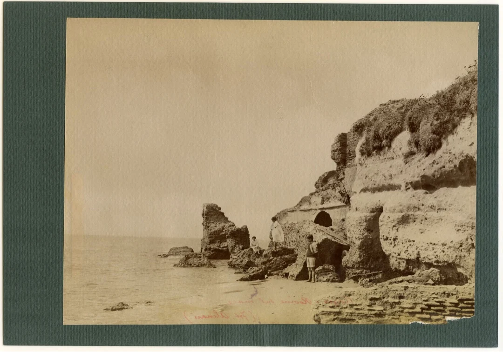
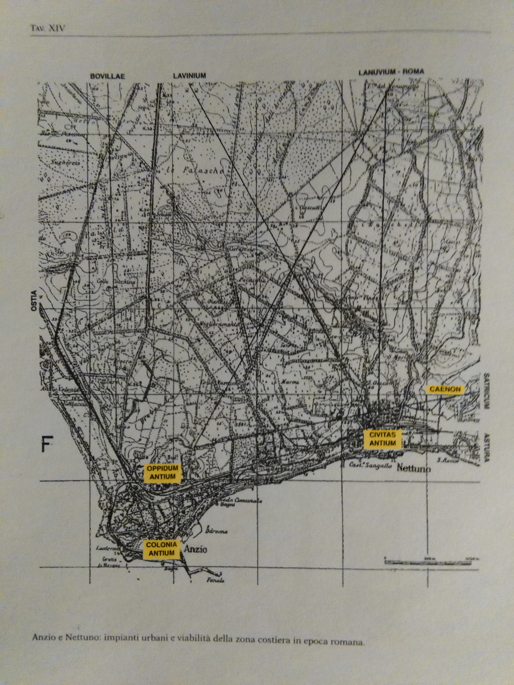
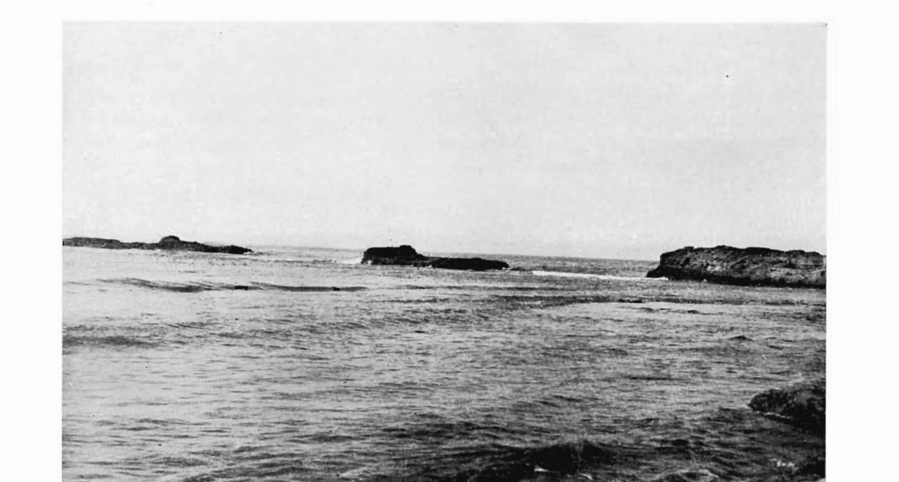
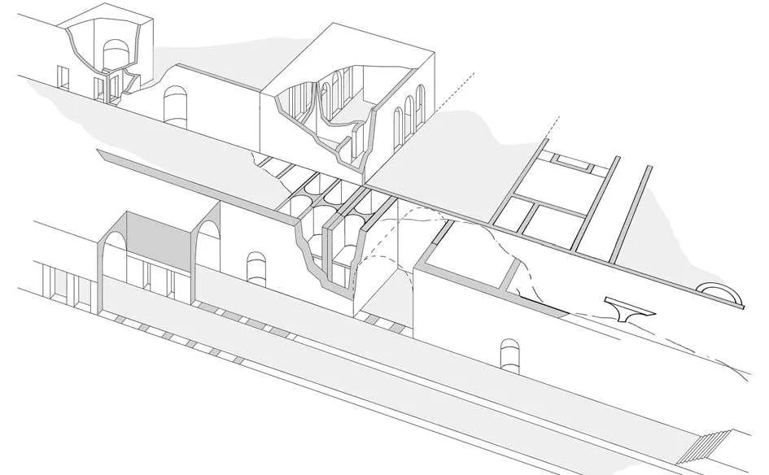
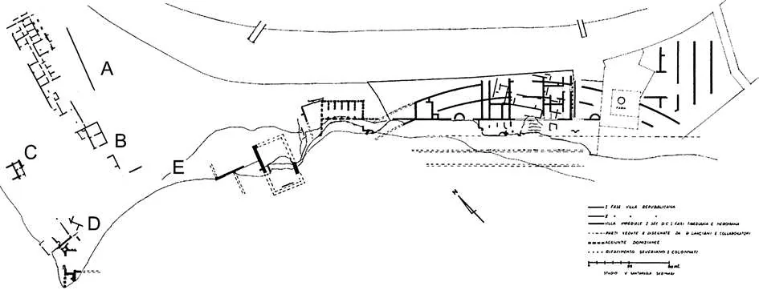
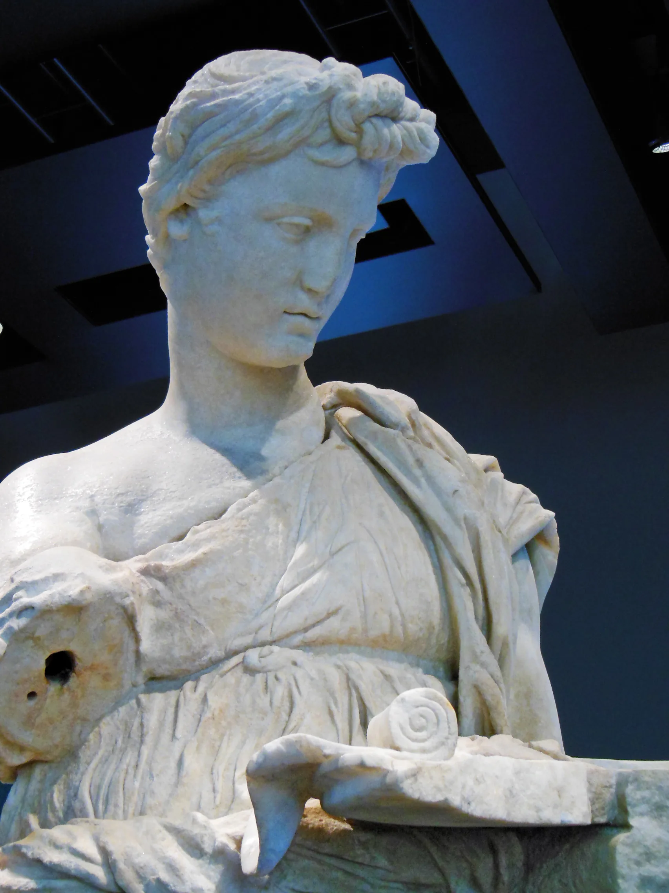
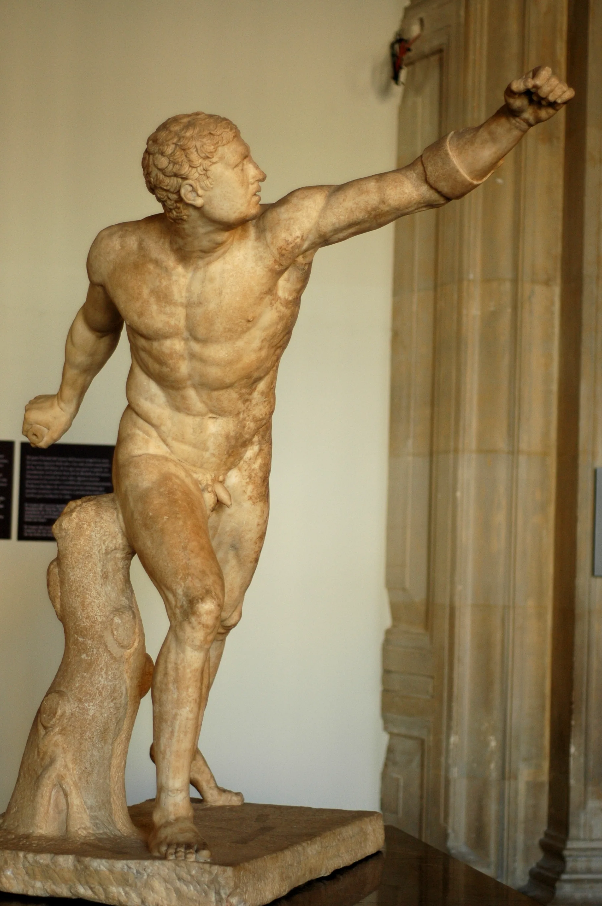
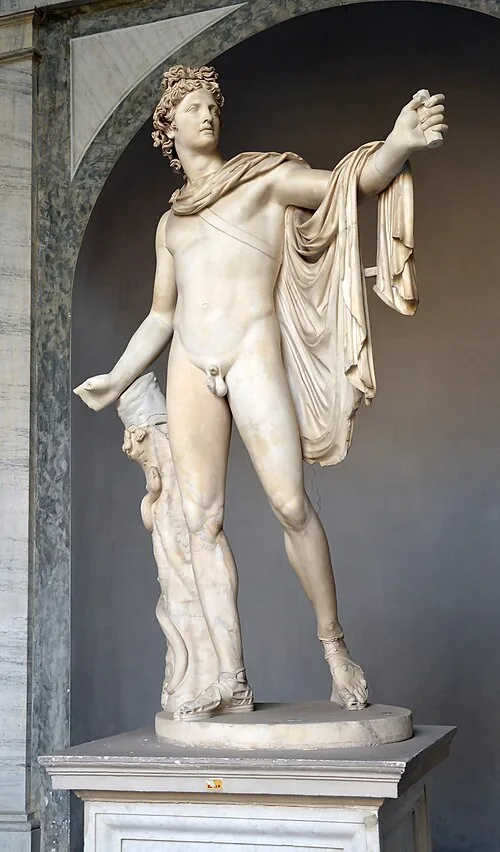
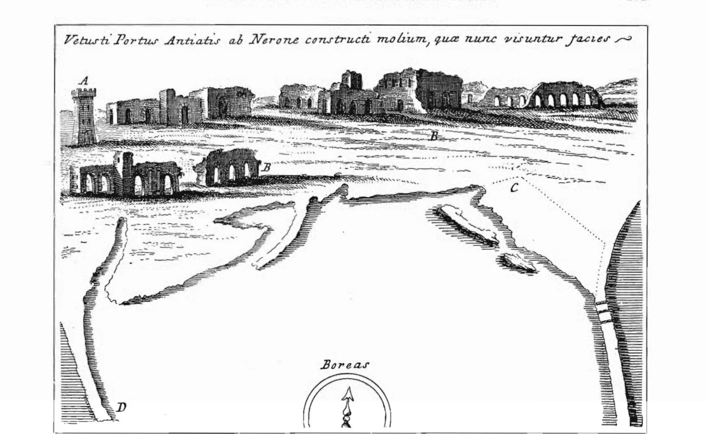

La villa dove nacquero due imperatori
Dalle prime case dei nobili romani al palazzo di Caligola e Nerone: cinque secoli di lusso sulla costa di Antium, tre statue celebri in tutto il mondo e una lunga decadenza.
«Nihil quietius, nihil alsius, nihil amoenius»: «Niente di più tranquillo, di più fresco, di più piacevole»
Cicerone, Epistulae ad Atticum, IV, 8
Da questo pianoro di pietra che scivola nel Tirreno sono uscite tre delle statue più famose dell'antichità: la Fanciulla di Anzio, il Gladiatore Borghese e, almeno secondo la tradizione, l'Apollo del Belvedere. Qui nacquero due imperatori. E per quasi cinque secoli qui sorse la casa al mare più ambita della famiglia imperiale. Oggi quasi tutto è sott'acqua, mangiato dalle onde o sepolto sotto le case. Proviamo a immaginarlo.
Il contesto geografico e storico
Il promontorio di Capo d'Anzio
Anzio sta su un promontorio di macco, un'arenaria calcarea piena di conchiglie fossili, che si allunga nel Tirreno a circa 58 chilometri da Roma. La costa è una falesia che cade dritta sul mare. Tra il ciglio del pianoro e la battigia resta una striscia larga fra 60 e 80 metri. Per secoli questa forma ha regalato al posto il suo panorama, e alla villa il suo nemico: il mare, che la morde da sempre.
I resti della villa occupano un arco di costa di circa 800 metri. Da una parte c'è la punta di Capo d'Anzio, con il faro dell'Ottocento. Dall'altra c'era l'Arco Muto, una sostruzione romana ad arco che fino agli anni Sessanta era uno dei segni più riconoscibili della costa. Nel 1965 lo demolirono.

Antium prima di Roma
Prima di diventare la villa degli imperatori, Antium era una delle città più forti del Lazio del sud. Qualcuno ci viveva già nell'età del Ferro: nella zona di viale Severiano sono venuti fuori materiali tra il IX e il VII secolo a.C. Ci abitarono prima i Latini, poi i Volsci. Le foto aeree mettono il villaggio più antico sul pianoro delle Vignacce. E nel 1980-81 la Soprintendenza ha scavato un tratto di mura lungo più di 25 metri, alto ancora cinque file di blocchi: costruito all'inizio del V secolo a.C., sopra un terrapieno molto più antico.
Anzio si arrese a Roma nel 338 a.C., con la Guerra Latina. I Romani presero le navi da guerra anziati e con i loro rostri, gli speroni di bronzo, ornarono la tribuna degli oratori nel Foro. Ma non rasero al suolo la città. La conquista, scrive Santamaria Scrinari, «non distrugge la volsca ma, rispettandone le strutture di difesa e l'impianto urbanistico, ne potenzia la funzionalità e ne valorizza la bellezza».
Anzio capitale dell'otium romano
Dopo la conquista Anzio diventò in fretta uno dei posti di villeggiatura preferiti dai nobili romani. Era a meno di due giorni di viaggio da Roma, sul mare, lontana dal caldo e dall'aria cattiva della capitale: il rifugio perfetto per gli otia, il tempo libero dei senatori. Cicerone, nelle lettere, la chiamava il posto più quieto e piacevole che conoscesse. E le grandi famiglie si costruirono case lungo tutta la costa.
Nel 2 a.C. Augusto era nella villa di Anzio quando arrivò una delegazione del popolo romano. Gli offrivano il titolo di Padre della Patria, e lui lo rifiutò. Lo storico non nomina nessun padrone di casa: segno che la villa era già della famiglia imperiale.
Le sette fasi costruttive della Villa Imperiale
La ricostruzione di come crebbe la villa si deve soprattutto a Vanda Santamaria Scrinari. Nel volume Mosaici antichi in Italia. Antium (1975, con M.L. Morricone Matini) ha riconosciuto sette fasi di costruzione, dal II secolo a.C. al III d.C. Per l'Enciclopedia dell'Arte Antica Treccani quel libro «offre una valida messa a punto» sui monumenti romani di Anzio, «in primo luogo della grandiosa villa imperiale».
Fasi I e II · Le domus repubblicane (II sec. a.C.)
Le prime case risalgono al II secolo a.C., in due fasi. La Treccani le collega, con un forse, alla casa del bisnonno e del nonno di Augusto. Seguivano lo schema classico della villa di famiglia: il tablino (lo studio del padrone), i cubicula, cioè le camere, il triclinio per i pranzi, tutto rivolto verso il panorama a ovest, con un'esedra e una loggia sul mare.
Le fondazioni erano in macco. I muri, in opus incertum: pietre irregolari annegate nella malta, poi un primo reticolato. Per i pavimenti si usava l'opus signinum, un battuto di cocci e calce, con pannelli di mosaico bianco e nero nelle sale importanti. Di queste prime case resta poco. Nerone, rifacendo tutto in grande, ne cancellò quasi tutte le fondamenta.
Fase III · Augusto e la nascita della proprietà imperiale (dal 22 a.C.)
Con Augusto arriva il pezzo forte: la grande esedra, probabilmente un portico a pilastri aperto sul mare. È la svolta. La villa smette di essere un insieme di case separate e diventa un unico organismo, con una facciata monumentale sul Tirreno. Su quell'esedra si appoggerà tutto quello che verrà dopo.
Fase IV · L'espansione giulio-claudia: Nerone e il palazzo sul mare (37–68 d.C.)

Nerone stravolse la residenza e la ricostruì da capo, con un'idea nuova. La villa arrivò a superare gli 800 metri lungo la costa. Fece scavare nel macco sostruzioni e contrafforti a grandi nicchie; gallerie e cunicoli nella roccia, per i servi e per far girare l'aria; corridoi e scale lunghissimi per scendere dal pianoro alle sale costruite sul mare. Tra le opere più ardite, gli archi di sostegno sulla falesia: gli stessi che, col nome romantico di Arco Muto, resistettero fino al 1965.
Nerone si fece costruire anche un porto nuovo, rotondo, tra le opere di ingegneria più ambiziose del suo tempo. Svetonio dice che costò una fortuna. Sott'acqua, l'archeologo Enrico Felici ha trovato il calcestruzzo di pozzolana fatto come prescriveva Vitruvio, e perfino le sigle punzonate sui legni delle casseforme originali: firme di cantiere del I secolo d.C., che quasi nessun altro porto ha conservato. Lo specchio d'acqua misurava circa 34 ettari, quanto una cinquantina di campi da calcio.
Com'era quel porto prima che lo misurassero i sub? Lo racconta chi lo guardava dalla riva a metà Ottocento. Francesco Lombardi ne attribuiva il disegno a Severo e Celere, i grandi architetti di Nerone, e ne leggeva la forma a occhio nudo: i due moli disegnavano «una forma ellittica schiacciata nella base», con una bocca di circa sessanta metri protetta dal molo destro. Con la bassa marea, a fior d'acqua, si vedeva la piattaforma che reggeva il faro.
Nell'acqua trasparente distingueva muri sommersi che tagliavano il bacino; in quelli ad angolo vedeva forse una darsena riservata, «a somiglianza del porto Traianeo in Civitavecchia». E correggeva Nibby, che dava al porto un giro di due miglia. In uno scavo fatto per caso nell'orto Mencacci erano spuntati pavimenti di marmo e pietre forate per legare le gomene: il porto antico arrivava fin lì, non oltre. All'imboccatura, annotava, c'erano ancora nove metri d'acqua.

A chiudere due secoli di liti fu un'idea che nel 1938 era avveniristica: guardare il porto dall'alto. Dal Settecento i rilevatori non si mettevano d'accordo sulla forma dei moli. Fontana, Burri, Piale, Canina, Zeri e Lehmann-Hartleben immaginavano due bracci staccati, con una diga in mezzo e due entrate, come a Ostia e a Civitavecchia. Il Rasi, e con lui il Fea, giuravano su una bocca sola, fidandosi del rilievo accuratissimo fatto nel 1748 dall'ingegnere Mareshal per papa Benedetto XIV.
Lugli dalla barca non era riuscito a vedere niente, «quantunque in condizioni favorevoli di luce». Così ottenne dal Ministero dell'Aeronautica un rilievo fotografico aereo, scattato nel settembre 1938: uno dei primi usi sistematici della fotografia aerea in archeologia, in Italia. Il risultato fu netto. Il porto di Nerone aveva una sola bocca, rivolta a sud-est e larga circa 60 metri, come pensavano il Rasi e Lombardi. Il molo di ponente correva quasi dritto per circa 850 metri. Quello di levante, lungo 700, aveva quattro piccole aperture per far passare le correnti e non insabbiarsi, e un marciapiede interno di 5,50 metri su cui Innocenzo XII appoggiò la sua banchina.
E i muri sommersi? Lugli li leggeva in un altro modo: il porto rimpicciolito nel primo Medioevo. Dopo le incursioni di Genserico (456) e l'assedio di Vitige (537), a che serviva uno specchio d'acqua di 34 ettari per le poche navi rimaste? Darsena o porto ristretto: le due ipotesi sono ancora tutte e due sul tavolo.
Fase V · Domiziano: il sistema idraulico e la «Biblioteca» (81–96 d.C.)
Come si data un muro? Dai mattoni. I bolli impressi sopra dicono in che fornace e in che anni furono fatti, e qui raccontano di un grande riordino voluto da Domiziano. Sale isolate dal caldo e dal freddo, nuovi canali per l'acqua, pareti rivestite di nuovo. Il complesso che da sempre si chiama «Biblioteca di Domiziano», però, non era una biblioteca. È una costruzione nata per foderare una rientranza della falesia. La pianta è irregolare, perché la decideva la roccia, e ci sono volte in mattoni, affreschi, finestre sul mare.
Da dove viene allora quel nome? Dai libri. Filostrato, nella Vita di Apollonio, racconta che nel palazzo di Anzio Adriano conservava rarità di ogni tipo, e fra queste un libro con le dottrine di Pitagora. Negli spazi della sostruzione fu ricavato un ninfeo, una grotta con fontana, dipinta «del tipo a giardino» e con un grande pannello di scene di caccia.
Fase VI · Adriano: la raffinatezza del bello (117–138 d.C.)
Adriano lasciò un segno di gusto. Restaurò le strutture di Nerone e di Domiziano e ci aggiunse padiglioni separati, in mattoni di qualità altissima: sottili, triangolari, ben cotti e tutti uguali, la stessa tecnica di Villa Adriana a Tivoli. La tradizione degli antiquari, ancora in Lombardi, gli attribuiva una biblioteca «copiosissima», con i libri di Apollonio di Tiana, e grandi granai per i rifornimenti dell'esercito. Filostrato chiama il palazzo di Anzio «una reggia illustre».
Gli scavi di fine Ottocento hanno riportato alla luce stanze di età adrianea, con mosaici a intrecci e viticci su fondo bianco. In una sala di circa otto metri per otto ci sono piccoli busti di donna. In un'altra, un genio alato: la cornucopia nella sinistra, una verga nella destra. E le terme? Avevano i tubi dentro i muri e il pavimento sollevato su pilastrini, le suspensurae, perché sotto corresse l'aria calda.
Fase VII · I Severi: il grande restauro monumentale (inizi III sec. d.C.)
L'ultima grande stagione di lavori è dei Severi, soprattutto di Settimio Severo (193–211 d.C.). Con loro la villa diventa un palazzo. Sopra l'esedra di Augusto sorge un grande atrio a otto colonne di marmo cipollino, su basi di travertino. Da lì si entrava in una sala a tre navate aperta sul mare, grande come una basilica.
Le terme diventarono enormi, con un calidarium, la sala calda, di grandi dimensioni, pilastrini in mattoni e pavimento in cocciopesto. Alle pareti, marmi di tutti i colori disposti a disegni geometrici, compreso il famoso marmo africano, che veniva in realtà da Teo, in Asia Minore, ed era tra i più cari del mondo antico. Con i Severi la villa toccò la sua massima estensione.
La rilettura del 2008: due grandi progetti, non sette fasi
Le sette fasi, però, non sono l'ultima parola. Nel 2008 Alessandro Jaia è ripartito dai muri e dalle carte d'archivio, e ha rimesso in discussione tutta la sequenza della Scrinari. Il punto debole era il metodo. Il reticolato, usato per datare le fasi, nella villa non compare quasi mai nei muri in alzato della prima età imperiale: sta nelle fondazioni e nelle sostruzioni, dove era solo un modo pratico (ed economico) di costruire. Tolto quel criterio, le sette fasi si riducono a due grandi progetti, opposti tra loro.
Il primo progetto? La grande struttura curva. Non il belvedere di una villa, ma un'imponente passeggiata coperta a portici, a sé stante, tra la fine della Repubblica e l'inizio dell'Impero, che seguiva la curva della costa. La casa vera e propria stava probabilmente più all'interno, e nessuno l'ha mai trovata. Lungo la falesia, intanto, Jaia conta quattro case repubblicane: al faro, alla «biblioteca», alle terme e all'Arco Muto. Quella dell'Arco Muto potrebbe essere il primo nucleo della proprietà dei Giuli o dei Domizi.
Il secondo arriva tra la fine degli Antonini e i Severi. È un palazzo piantato direttamente nel mare: edifici costruiti sulla battigia, ai piedi della falesia, dal Semaforo fino alla radice del porto di Nerone, per più di 700 metri. Jaia usa un paragone che dice tutto. Sembravano i palazzi di Venezia, ma su un mare aperto e senza difese. Le terme avevano quattro piani: in basso i magazzini, a livello dell'acqua; in cima la latrina e la vasca calda, all'altezza della strada di oggi.

La stessa ricerca ha ritrovato all'Archivio Centrale dello Stato i taccuini mai pubblicati di Guglielmo Gatti. Nel 1931 aveva disegnato, con pazienza da miniaturista, gli scavi dell'Arco Muto. Jaia ha rimesso quei disegni sulla carta di oggi, controllandoli con un piccolo scavo nel 2006. Risultato: la parte conosciuta della villa è cresciuta di un terzo. E i mosaici del Museo Nazionale Romano, compreso il grande Ercole e Acheloo, hanno ritrovato il punto esatto da cui venivano. Scrinari e Jaia, qui, restano uno accanto all'altro. È il modo in cui questa guida tratta le correzioni.

Ambienti e strutture del complesso
Il porticato curvilineo sul mare
Tra la fine del I secolo a.C. e la metà del I d.C. le case private spariscono, e al loro posto corre un lungo portico curvo che abbraccia tutto l'arco della costa. È il segno che l'intera area è passata all'imperatore. Si camminava al coperto, con il golfo davanti e, sullo sfondo, la linea dei Colli Albani.
Il criptoportico
Il criptoportico era una galleria con la volta, mezza sotto terra. Serviva a molte cose: passeggiare al fresco quando d'estate il sole picchiava, tenere le provviste, far circolare l'aria, far passare i servi da una parte all'altra della villa senza farli vedere. Alcune stanze hanno affreschi così belli che forse erano una diaeta, un salotto per l'estate.
Le terme
Le terme cambiarono più volte, da Adriano ai Severi. Il percorso era quello classico: frigidarium, il bagno freddo; tepidarium, il tiepido; calidarium, il caldo; e il laconicum, la sauna secca. I Severi le ingrandirono a dismisura, fino a farle somigliare alle grandi terme pubbliche di Roma.
Calcedonio Soffredini, nella sua Storia di Anzio del 1879, riporta come si vedevano quei resti verso il 1845. Corridoi con volte a cassettoni di stucco, «con fogliami e rosoni nel centro». Bagni con «sedili per giacervi» e con «chiavi o incastri per immettere o vietare le acque del mare»: rubinetti, in pratica, per far entrare e uscire l'acqua salata dalle vasche. Mezzo miglio più a levante, a metà strada tra Anzio e Nettuno, un altro edificio termale mostrava ancora «la volta di una essedra crollata sul pavimento, tessuta a cassettoni romboidali con stucchi, abbellita di mosaico e di conchiglie». Già allora cadeva a pezzi.
Il teatro
Un'iscrizione di marmo trovata nel 1711 parla di un teatro legato alla villa, collocato nella zona di Santa Teresa, della metà del I secolo d.C. Un teatro privato? Non stupisce. Le grandi ville imperiali avevano spazi per spettacoli, letture e concerti tra pochi intimi, e a Nerone piacevano moltissimo.
C'era però anche un secondo «teatro», quello che Bianchini disegnò vicino alla costa, sopra una terrazza artificiale a grandi volte. Su questo Lugli sollevò un dubbio che regge ancora. Nel disegno del Settecento la cavea era già distrutta, e la scena aveva «una forma assai strana», con corpi sporgenti e stanze absidate simili a padiglioni. Nelle volte si leggevano i bolli delle fornaci Domiziane, fatti sotto Settimio Severo e Caracalla. Per Lugli non era un teatro ma una diaeta, una di quelle terrazze «in parte scoperte e in parte coperte, con portici e fontane» dove si viveva all'aria aperta, col panorama davanti.
Anche quel che restava della scena crollò verso la metà dell'Ottocento. Oggi non c'è più niente.
I grandi ritrovamenti
Intorno alla villa imperiale, le ville private non morirono. Anzi, continuarono a essere curate e ingrandite. Quelle della costa di levante stanno sotto le case di oggi, lungo la strada Anzio-Nettuno, e nel parco comunale di Villa Adele, che prima fu Villa Cesi, poi Pamphilj, poi Borghese, poi Aldobrandini. È da qui che, in quattro secoli, sono usciti alcuni dei capolavori più famosi del mondo antico.
La Fanciulla di Anzio (1878)

La notte del 23 dicembre 1878 una mareggiata più violenta del solito fece crollare un muro della villa. Dietro c'era lei. Secondo il catalogo del Museo Nazionale Romano, la statua stava in una nicchia del doppio portico affacciato sul mare. Jaia ha precisato il punto: uno dei due grandi nicchioni ai lati della sala calda del criptoportico, dove accanto alla Fanciulla c'era anche un'Artemide, poi andata perduta.
Nel 1908 lo Stato italiano la comprò con un voto apposito del Parlamento, per 450.000 lire, dopo una campagna pubblica sostenuta dallo scultore Leonardo Bistolfi. Oggi è al Museo Nazionale Romano, a Palazzo Massimo alle Terme.
È alta 170 centimetri ed è fatta di due marmi greci diversi: il pario per la spalla nuda, il pentelico per le vesti. Una scelta rara, per rendere diverse al tatto la pelle e la stoffa. La ragazza avanza con un vassoio di oggetti sacri: un rotolo mezzo aperto, un volumen; un ramo d'alloro, la pianta di Apollo; e un oggetto di cui restano solo due piedini a zampa di felino. Si è arrotolata il mantello in vita, per non inciampare.
Chi è? Non lo sappiamo. Una sacerdotessa di Dioniso, la Pizia di Delfi, o una profetessa di un santuario di Apollo: le ipotesi principali sono queste. Nel 1983 il professor Cellini ne ha proposta un'altra, che la Treccani riporta. Su un punto, almeno, gli studiosi sono d'accordo: è un originale ellenistico, non una copia, probabilmente del III secolo a.C., e qualcuno l'avvicina alla cerchia dello scultore Doidalsa.
Il Gladiatore Borghese (rinvenuto c. 1609)

La Treccani lo descrive come una «celebrata statua marmorea di guerriero (m 1,55) erroneamente interpretata come un gladiatore, rinvenuta presso Anzio sotto il pontificato di Paolo V (1605–1621)». Uscì dalla terra in diciassette pezzi, e nel 1611 lo rimise insieme lo scultore Nicolas Cordier. Lo firmò Agasia di Efeso, figlio di Dositeo, verso il 100 a.C. Entrò nella collezione Borghese, e nel 1808 il principe Camillo Borghese lo vendette, con tutta la raccolta, al cognato Napoleone Bonaparte. Oggi è al Louvre, a Parigi.
La firma, in greco, è incisa sulla base: ΑΓΑΣΙΑΣ ΔΩΣΙΘΕΟΥ ΕΦΕΣΙΟΣ ΕΠΟΙΕΙ, «Mi fece Agasia, figlio di Dositeo, efesino». Per la Treccani l'opera sta in una fase classicista dell'ellenismo, che rifà Lisippo con virtuosismo. Originale o copia? Il Della Seta, nel 1930, pensava a un bronzo del III–II secolo a.C. Agasia, allora, sarebbe stato solo il copista.
L'Apollo del Belvedere (ritrovato fine XV sec.)

Fu, scrive la Treccani, «trovata, secondo quanto dice Pirro Ligorio, ad Anzio, alla fine del XV secolo». Prima stette nel giardino del palazzo del cardinale Giuliano della Rovere, a San Pietro in Vincoli; quando il cardinale diventò papa Giulio II, la portò al Belvedere del Vaticano, dov'è ancora. È una copia romana del I–II secolo d.C., che la Treccani giudica «piuttosto fredda e classicista», da un originale greco attribuito di solito a Leocare. La restaurò Giovanni Angelo Montorsoli. Winckelmann la chiamò «il più alto ideale dell'arte fra tutte le opere antiche».
Il giudizio di Winckelmann, letto nell'edizione italiana del 1783 curata da Carlo Fea, è più sottile di quella formula famosa. Messo accanto al Laocoonte, l'Apollo per lui perdeva sulla tecnica e vinceva sull'anima. «Il Laocoonte è un'opera di maggiore studio ed abilità che l'Apollo di Belvedere», scriveva, ma lo scultore dell'Apollo «aver dovea più elevato lo spirito, e anima più tenera». Meno mestiere, più grazia. Da allora la critica non ha mai smesso di rigiocare quella partita.
Il Ninfeo di Ercole (rinvenuto 1930)
Lo trovarono nel 1930, durante gli scavi a Villa Corsini Sarsina. Il Ninfeo di Ercole è dell'età di Nerone e apparteneva a un luogo sacro a Ercole, nella zona dell'acropoli. È piccolo, 2,34 metri per 2,89, ma ricchissimo: travertino, marmo bianco e marmi colorati, tessere di pasta di vetro, pietra pomice per le superfici ruvide tipiche delle grotte d'acqua, e conchiglie.
Lugli racconta che venne fuori «nei lavori di ampliamento della grotta» nella proprietà Mazza, a ponente dell'emiciclo. L'edicola era scavata nella roccia, ai piedi del taglio che da quella parte faceva da difesa alla città. La portarono a Roma, al primo piano del chiostro di Michelangelo del Museo delle Terme. Oggi è tornata a casa, al Museo Civico Archeologico di Anzio, a Villa Adele.
Tavola riassuntiva dei capolavori di Antium
| Opera | Datazione | Ritrovamento | Sede attuale verificata |
|---|---|---|---|
| Apollo del Belvedere | Copia romana I–II sec. d.C. da originale greco (Leocare?) | Anzio?, fine XV sec. (fonte: Pirro Ligorio; provenienza non certa) | Musei Vaticani, Cortile del Belvedere |
| Gladiatore Borghese | c. 100 a.C. (Agasia di Efeso) | Anzio, c. 1609, pontificato Paolo V | Musée du Louvre, Parigi |
| Fanciulla di Anzio | Originale ellenistico, III sec. a.C. | Villa Imperiale, Anzio, 23 dic. 1878 | Museo Nazionale Romano, Palazzo Massimo, Roma |
| Ninfeo di Ercole | Età neroniana, I sec. d.C. | Villa Corsini Sarsina, Anzio, 1930 | Museo Civico Archeologico, Villa Adele, Anzio |
| Mosaici e affreschi dalla villa | I–III sec. d.C. | Scavi Novecento sulla costa | Museo Civico Archeologico, Villa Adele, Anzio |
| Statuetta Fortuna Anziate | Età imperiale | Villa Spigarelli | Villa Spigarelli (proprietà privata, non accessibile) |
Il culto della Fortuna Anziatina
«O Diva, gratum quae regis Antium»: «O dea, che governi la graziosa Antium»
Orazio, Carmina, I, 35, 1
Il tempio della Fortuna di Anzio è legato a filo doppio alla storia della villa. Il culto era antichissimo, e il santuario della dea protettrice della città era famoso in tutto l'Impero per il suo oracolo, che interrogavano imperatori e grandi personaggi. La Fortuna di Anzio proteggeva i campi e il mare, ma soprattutto il mare: sulle monete del magistrato Rustio tiene in mano il timone di una nave. Caligola andò a consultarla poco prima di essere ucciso.
I Fasti e il collegium della villa
Le residenze private: una città su tre terrazze
La villa imperiale non era sola. Lungo la falesia Anzio era un mosaico di case ricche, e Laura Ebanista le ha rimesse in ordine su tre terrazze, ricavate domando il salto della roccia. In alto, tra 35 e 40 metri, a monte della stazione, c'erano la città antica e il teatro. In mezzo, tra 12 e 19 metri, le ville. In basso, a filo del mare, la villa dei Cesari. In tutto almeno undici complessi privati, quasi tutti noti più per le statue che ne uscirono che per i muri rimasti.
Sulla terrazza alta c'è villa Spigarelli, costruita negli anni Venti del Novecento rispettando i mosaici e i muri di una casa abitata dalla fine della Repubblica al IV secolo. Nel 1921 ci tornò alla luce la famosa statuetta della Fortuna in trono; nel 1924, da uno sterro profondo due metri, un torso maschile letto come un Dioniso.
Sulla terrazza di mezzo si mettono in fila la villa già Corsini e Mencacci, oggi Sarsina, dove nel 1734 si trovarono una statua femminile presa per una sacerdotessa di Iside e un uomo che somiglia ai ritratti di Tiberio e Claudio; la nicchia del ninfeo di Ercole; il cosiddetto Quartierone, col suo criptoportico, a cui si lega il rilievo di Mitra; e villa Adele, dove dal 2021 la Sapienza ha ritrovato, sette metri sotto il giardino, un settore di terme sepolto.
Più a nord, oltre la valletta di un antico fiume, altre due case. Presso l'ex stazione semaforica, nella proprietà Mastrella, una testa di Iside-Tyche con una corona di torri, parente stretta della grande Fortuna di Palestrina. Presso l'ex Italcable, delle terme da cui viene l'Apollo «tipo Anzio».
Un altro nucleo, vicino al villino Folicaldi in via Gramsci, nasconde sotto le case una villa imperiale con un'aula absidata, una sala calda e il solito criptoportico che corre verso il mare. E il filo che tiene insieme la collezione di Anzio è sempre lo stesso: dèi orientali, Anubi e Iside in testa, che nelle cappelle private delle ville finiscono per somigliare alla Fortuna di casa.
La decadenza e il Medioevo
Ancora nel 380-382 d.C. Antium era ricca abbastanza da ottenere dallo Stato la ricostruzione delle terme pubbliche: lo ricorda un'iscrizione del proconsole della Campania Anicio Auchenio Basso. Poi il declino non si fermò più. Pirati, malaria, il porto che si insabbiava: secondo Procopio l'ultima volta che qualcuno ci fece commercio fu nel 537. La splendida residenza dei Cesari diventò un borgo desolato.

Lombardi raccoglie le notizie di quella lunga agonia. L'ultimo imperatore legato ad Anzio è Costantino, che regalò alla basilica del Laterano i molti poderi che possedeva nel territorio. La città cristiana, però, ebbe i suoi vescovi. Un Gaudenzio firmò nel 465 il concilio di papa Ilario, un Felice partecipò al sinodo romano del 487, un Vindemio a quelli del 499 e del 501. Tra V e VI secolo, dunque, Antium era ancora una comunità viva.
Poi, tra VIII e IX secolo, arrivarono i Saraceni. Lombardi leggeva «la sofferta azione del fuoco» nei frammenti di marmo che ancora affioravano. E raccontava che gli ultimi abitanti, lasciata «la città ormai inabitabile», scapparono in parte verso l'interno e in parte si chiusero nel vicino tempio di Nettuno. Da lì, dice la tradizione, nacque il paese che ne porta il nome.
Dopo essere stata terra di San Pietro, nel Duecento Anzio passò ai Frangipane, la potente famiglia romana che controllava buona parte della costa laziale. Poi ai Colonna. E tra Quattro e Cinquecento il porto di Nerone, sopravvissuto mille anni all'abbandono, ricevette il colpo di grazia per decreto. Papa Alessandro VI, si racconta, lo fece interrare perché i Turchi non lo usassero come base. Una scelta di difesa che cancellò l'ultima opera ancora funzionante della città romana. Nel 1594 Marcantonio Colonna vendette Anzio alla Camera Apostolica per 400.000 scudi. Da allora, con la nuova moda della villa fuori città, Anzio tornò a girare intorno alla corte di Roma.
Le ville cardinalizie: una mappa delle successioni
| Villa oggi | Origine e successione proprietaria | Importanza archeologica | Uso attuale |
|---|---|---|---|
| Villa Sarsina / Municipio | Cardinal Nereo Corsini (villa e palazzo del 1743, dove ospitò Benedetto XIV) → famiglia Mencacci (vendita del 1820) → principi di Sarsina | Area del ritrovamento della Fanciulla (1878); Ninfeo di Ercole (1930) | Sede del Municipio di Anzio |
| Villa Albani | Cardinal Alessandro Albani (palazzo del 1735, col motto Amicis et genio sulla porta del viale) → Camera Apostolica (Ospizio Marino) | Probabile area del Tempio della Fortuna | Struttura ospedaliera e sede ASL |
| Villa Adele (già Villa Pia) | Villa Cesi → Pamphilj (il casino, per Lombardi, su «vago disegno del Vignola») → Borghese → Aldobrandini → P.O.A. | Area degli scavi del Gladiatore (1609) e di strutture medio-repubblicane (Jaia 2021–22) | Museo Civico Archeologico e uffici comunali |
| Villa «di bello aspetto» (Costaguti), verso Nettuno | Cardinali Vincenzo e Giambattista Costaguti (XVII sec.) → Torlonia → Borghese (1831) | Sorge sulla fascia delle ville romane di levante | Proprietà privata (Villa Borghese) |
Il porto nuovo di Innocenzo XII e la scelta sbagliata
Il ritorno della corte papale culminò nel cantiere del porto di Innocenzo XII. Nel 1698 il papa venne di persona a giudicare i progetti. Voleva dare un porto a una costa famosa per i naufragi. La relazione del viaggio, scritta a mano e conservata alla Biblioteca Chigiana, descrive l'accoglienza da favola dei Borghese nella tenuta di Carroceto. Un palazzo di legno tappezzato di damasco cremisi, un anfiteatro di alloggi per il seguito, mangiatoie per seicento cavalli. Il papa, contento, firmò perfino una dispensa datata «Datum in Villa Borghesiana Carroceti».
Sul tavolo c'erano due progetti. L'architetto Carlo Fontana proponeva «saviamente», scrive Lombardi, di riusare l'insenatura chiusa dal molo destro del porto di Nerone. Alessandro Zinaghi prometteva un molo tutto nuovo per soli quindicimila scudi. Spaventato dal costo di restaurare le «gigantesche braccia» antiche, il papa scelse Zinaghi. Per Lombardi fu «la mal'augurata formazione del nuovo porto»: costò il doppio del previsto e in centoquarantasei anni di dragaggi si era già mangiato «meglio che due milioni di scudi», senza vincere la sabbia.
Da figlio di Anzio, Lombardi chiudeva i suoi Cenni con un appello: o si restaurava il porto di Nerone, o Anzio sarebbe «rientrata nel suo nulla per la seconda volta». La storia gli ha dato torto solo a metà. Il porto moderno vive. Ma la lotta con la sabbia non è mai finita.
Storia delle ricerche
Le indagini ottocentesche
Il primo a raccontare queste rovine con l'occhio del topografo fu Antonio Nibby, arrivato ad Anzio nel 1819 dopo dieci miglia di bosco. Trovò un borgo di pescatori. Cinquecento anime al massimo, forzati e guarnigione compresi. Sulla riva, a ponente del porto antico, vedeva sostruzioni in mattoni e reticolato, forse resti di terme o di condotte d'acqua, con tracce di canali, un pavimento in cocciopesto e un pezzo di mosaico. E notava con amarezza che molte rovine disegnate dal Volpi qualche decennio prima non si vedevano più.
L'unico resto che gli sembrava davvero imponente stava all'interno, non lontano da Palazzo Corsini: lunghi corridoi sotterranei, che leggeva come magazzini o come un antico arsenale. Due secoli dopo quei corridoi non sono più un mistero isolato. Nella stessa fascia conosciamo oggi il criptoportico del Quartierone e, dal 2023, le gallerie riemerse sette metri sotto Villa Adele, costruite per reggere delle terme. Che uno di questi sia l'«arsenale» di Nibby non è dimostrato. Ma la sua lettura, ambienti di servizio più che sale di rappresentanza, è la stessa che l'archeologia dà oggi.
Nel 1847 arrivò la prima descrizione completa a stampa, quella di Francesco Lombardi. Registrò strutture e dettagli oggi scomparsi, dall'esedra di stucco alle camere dipinte crollate sotto i suoi occhi. I primi studi sistematici si devono a Rodolfo Lanciani, i cui appunti sulla villa sono nel Codice Vaticano Latino 13045. E a Giuseppe Lugli si deve il Saggio sulla topografia dell'antica Antium, uscito nel 1940.
Gli scavi 1930–1931
Le campagne del 1930–1931 sono il grande scavo sistematico del Novecento. Riportarono alla luce stanze, pavimenti a mosaico, pezzi di architettura e reperti importanti, tra cui il Ninfeo di Ercole. Molto di quello che si vide allora oggi non c'è più.
Il Progetto Antium · Sapienza Università di Roma (1998–oggi)
Il Progetto Antium della Sapienza lavora dal 1998, in convenzione con il Comune di Anzio. Lo dirige Alessandro M. Jaia. Nel 2001, dopo decenni di abbandono, l'area della villa è stata riaperta come parco archeologico, con i fondi del Giubileo (se e quando sia aperta oggi, conviene chiederlo al Comune o al Museo Civico). I risultati più recenti sono usciti nel 2024, negli atti del Tredicesimo Incontro di Studi sul Lazio e la Sabina, insieme a nuove ricerche sulle statue delle ville. Vengono dagli scavi 2021–2022 a Villa Adele, dove sono venute fuori strutture dall'età medio-repubblicana alla piena età imperiale: pezzi delle fortificazioni della città, sostruzioni di case private.